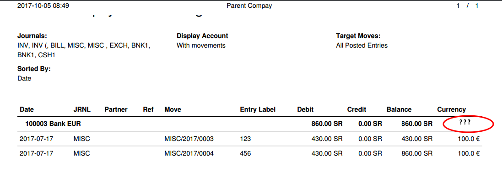
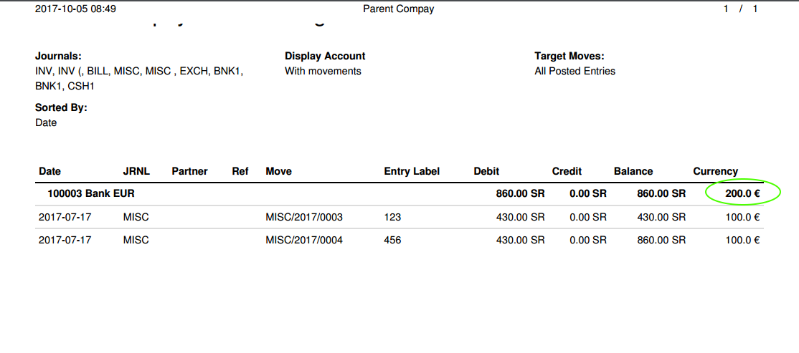

<section class="oe_container oe_dark">
    <div class="oe_row oe_spaced">
        <div class="oe_span12">
            <h2 class="oe_slogan">Account Balance in Secondary Currency</h2>
        </div>
        <p class='oe_mt32'>
Odoo account general ledger report  for individual accounts shows account balance in company currency by default. 
If the account is corresponding to a specific foreign currency and that particular foreign currency is the only secondary currency used in transactions involving the account, balance in secondary currency (foreign currency) would be a convenient feature. 
	   </p>
		 <div class="oe_span11">
        <div class="oe_row_img oe_centered">
            
        </div>
        </div>
        
	<p class='oe_span12 oe_mt32'>
	The module bt_account_balance_in_secondary_currency by BroadTech IT Solutions  modifies 
	General Ledger and Partner Ledger reports to show the balance in secondary currency.
	</p>
	
	<div class="oe_span11">
	    <div class="oe_row_img oe_centered">
	        
	    </div>
	</div>
	
	 <p class="oe_mt32 ">The following link provides a quick overview of the module functionality 
    <a href="https://www.youtube.com/watch?v=jliRZY4XIuI&feature=youtu.be"> account balance in secondary currency
</a>
    </p>    
    <p class='oe_mt32 oe_spaced'>
    For any assistance please feel free to contact us: contact@broadtech-innovations.com
     </p>
        
	
    </div>
</section>